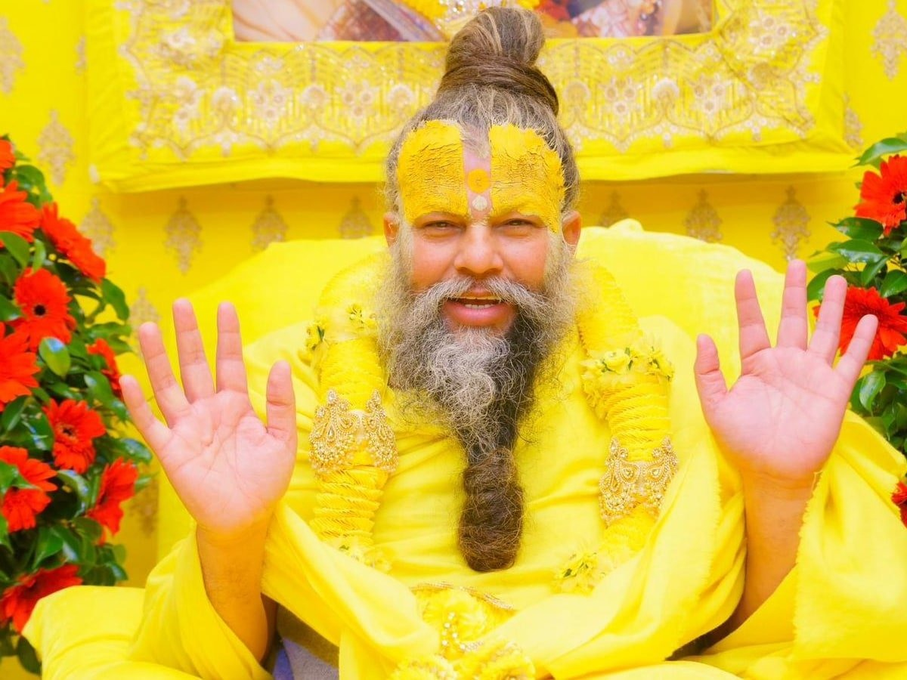
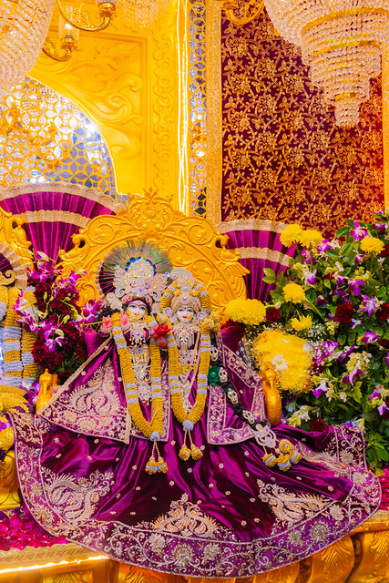
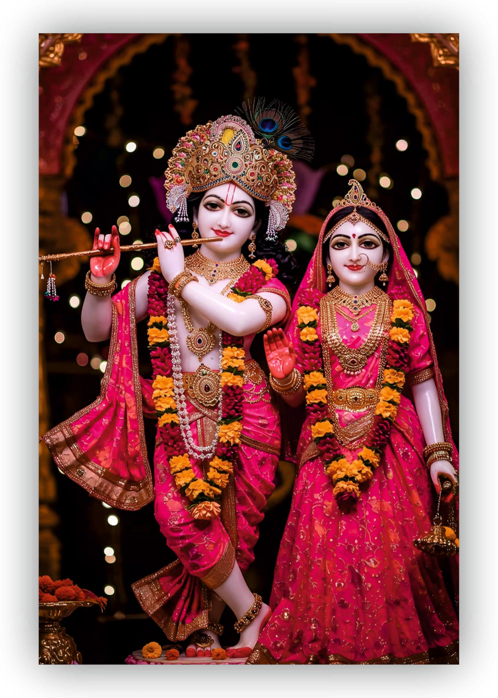
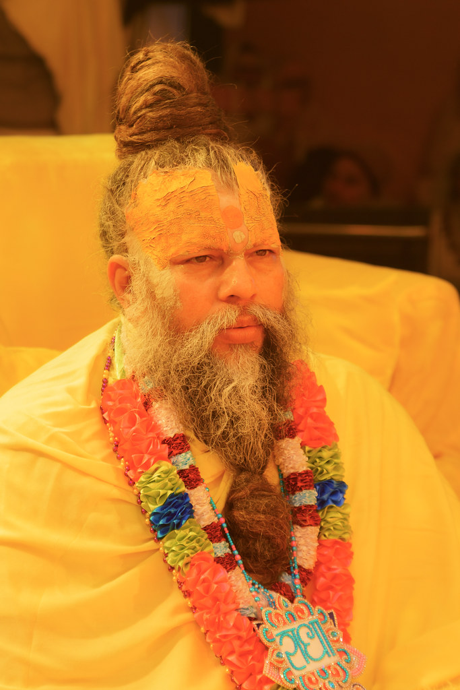

click on the image if you want discover about temples->
Maharaj Ji Thoughts
*“Jeevan mein jo kuch bhi ho raha hai, usse lekar chinta mat karo. Bhagwan har kisi ke liye ek sahi samay aur sahi raasta tay karte hain. Bas apna mann shant rakho aur un par vishwas rakho.” *“Prem aur seva hi jeevan ka asli saar hai. Jab tum bina kisi swarth ke dusron ki madad karte ho, tabhi tum Bhagwan ke sabse kareeb hote ho.” *“Kabhi bhi apne aap ko akela mat samjho. Bhagwan hamesha tumhare saath hain, bas tumhe unki upasthiti ko mehsoos karna hai.” *“Ahankar aur gussa insaan ko andar se kamzor bana dete hain. Vinamrata aur dhairya hi asli shakti hai.” *“Jo kuch tumhare paas hai, uske liye shukr manao. Santosh hi sabse bada dhan hai, aur isi mein asli sukh chhupa hai.” *“Bhakti ka matlab sirf pooja nahi hota, balki har kaam ko imandari aur prem se karna bhi bhakti hi hai.”